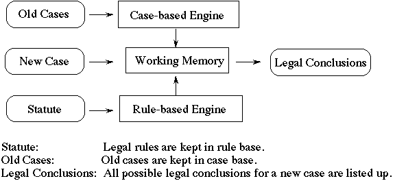

Machine: PIM, Multi-PSI Environment: PIMOS Language: KL1 Source Code: 1.7 MB Documents: Manual (English)

Legal knowledge consists of statutes and old cases.
As a statute is a set of legal rules, inference by a statute is realized as rule-based reasoning. Since legal rules often contain legal predicates (legal concepts), we need case-based reasoning to match legal concepts and concrete facts by referencing old cases and to reuse their explanations.
The rule-based engine refers to legal rules and draws legal consequences deductively. This engine is based on the parallel theorem prover MGTP (Model Generation Theorem Prover) and has several new functions.
The case-based engine searches for similar cases and new arguments are constructed by applying case rules to the new case. For the efficience, these processes are executed by parallel processing.